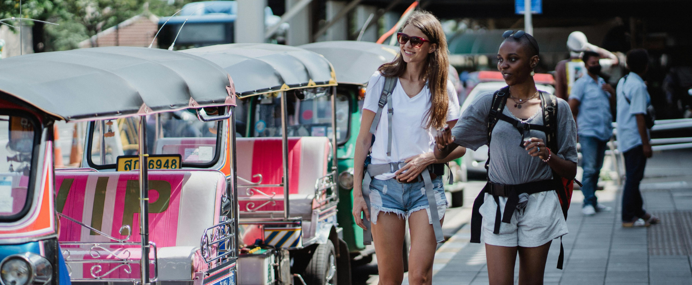

Backpacking i Thailand:
Backpacking i Thailand:
En Fortælling fra Nicole og Claires Eventyr i Asien
Af Mie Holm Jensen
Nicole og Claire, begge 24 år gamle og bedste venner siden gymnasiet, har altid drømt om at udforske verden sammen. Deres seneste eventyr førte dem til
Thailand, hvor de begav sig ud på en to måneders backpacking-tur fyldt med eventyr, latter og uforglemmelige oplevelser.
Jeg fik mulighed for følge med Nicole og Claire et par dage imens de var i Phang-Nga, for at høre om deres oplevelser og eventyr i Thailand.
Interviewet startede på deres hostel i Phang-Nga, hvor de to piger lige var komme tilbage fra deres besøg til Phang Nga Bay.
Hej Nicole og Claire, og tak fordi I tager jer tid til at sidde ned med mig. Hvordan har I det i dag?
Nicole: ”Hej, og tak fordi du ville interviewe os! Vi har det virkelig godt og er spændte på at dele vores oplevelser.”
Claire: ”Ja, vi er så glade for at være her i Thailand og opleve alt, hvad dette fantastiske land har at byde på. Vores tur har allerede budt os på en masse
spændende oplevelser.”
Det lyder fantastisk! Kan I fortælle mig lidt om, hvad der inspirerede jer til at tage på denne rejse?
Nicole: Absolut! Vi har altid haft en drøm om at rejse og udforske forskellige kulturer og steder. Thailand var et oplagt valg for os med dets smukke natur,
lækker mad og venlige mennesker.
Claire: Ja, og vi har også fulgt en masse rejsevlogs og videoblogs på sociale medier, som virkelig inspirerede os til at tage springet og tage afsted på vores
egen eventyrrejse.
Backpacking i Thailand og Phang-Nga Bay
Da jeg spurgte ind til deres dagsbesøg til Phang-Nga Bay smilte de begge stort. Det var tydeligt at indtrykket fra de store klipper og laguner stadig sad i dem.
Glæden strålede ud af deres øjne, mens de fortæller om deres erindringer fra turen.
Nicole: Wow, jeg kan stadig ikke komme over, hvor smukt det var ved Phang Nga Bay.
Claire: Ja, det var virkelig fantastisk. Alle de kalkstensklipper og de skjulte laguner var bare så betagende.
Nicole: Jeg tror virkelig, det var en af højdepunkterne på vores rejse. Husker du, da vi tog på kajaktur gennem hulerne?
Claire: Åh ja, det var helt magisk. Det føltes som om vi var i vores egen lille eventyrverden.
Nicole: Og at se de flydende landsbyer og få et indblik i den lokale kultur var virkelig interessant.
Claire: Jeg elskede at lære om de lokale fiskerfamiliers livsstil og hvordan de navigerede i det unikke miljø.
Nicole: Jeg tror virkelig, det var en af de oplevelser, vi aldrig vil glemme.
Claire: Ja, Phang Nga Bay vil altid have en særlig plads i vores hjerter.
Det lyder som en helt fantastisk oplevelse. Har I nogle specifikke destinationer eller aktiviteter, I ser frem til at udforske?
Nicole: Vi vil gerne besøge nogle af de mere afsidesliggende øer og opleve den uberørte natur. Derudover er vi også interesseret i at udforske nogle af de
historiske templer og byer.
Claire: Ja, og vi er begge eventyrlystne, så vi vil helt sikkert prøve nogle spændende aktiviteter som jungle trekking og snorkling.
Backpacker inspiration på Sociale Medier
Som en del af deres rejse, har Claire og Nicole lavet en videoblog, som allerede har 50.000 ugentlige følgere, for at dokumentere deres backpacker tur i Thailand.
(Klik her for at se deres seneste rejseblog og følg dem den næste måned her på Backpackersworld.dk)
Nicole: Vi startede vores videoblog som en måde at dele vores oplevelser med vores venner og familie derhjemme. Men det har virkelig udviklet sig til
meget mere end det. Vi elsker at filme og redigere vores eventyr og dele dem med vores følgere på sociale medier.
Claire: Det har været en fantastisk måde for os at dokumentere vores rejse og se tilbage på alle de fantastiske minder, vi har skabt undervejs.
Faktisk har det også givet lidt ekstra til vores budget så vi nu har råd til endnu flere aktiviteter.
Det er forståeligt. Har I nogle tips eller tricks, I gerne vil dele med kommende backpackere, baseret på jeres egne erfaringer?
Nicole: Absolut. Et tip, som vi begge har lært under vores rejse, er vigtigheden af at være åben for nye oplevelser. Nogle gange kan de bedste
øjeblikke opstå, når man træder ud af sin komfortzone og er villig til at prøve noget nyt. Det kan være alt fra at smage lokal mad til at deltage i
spontane aktiviteter med de mennesker, du møder undervejs. At være åben og nysgerrig vil virkelig berige din rejseoplevelse.
Claire: Ja, og når det kommer til pakning, er det vigtigt at huske på princippet om at pakke let. Det er fristende at medbringe
alt muligt udstyr og tøj, men jo mindre du har med, jo mere fleksibel og behagelig bliver din rejse. Vi har begge oplevet at have for meget med på vores rejser,
og det kan virkelig være en byrde at slæbe rundt på unødvendige ting. Så vær selektiv og kun medbring det mest essentielle.
Nicole: Og en sidste ting, som vi vil understrege, er vigtigheden af at være forberedt på udfordringer undervejs. Backpacking kan
være en utrolig givende oplevelse, men det kan også være udfordrende på mange måder. Vær forberedt på at møde modgang, vær tålmodig og fleksibel, og husk
at det er en del af eventyret. At være bevidst om sit budget og ikke overanstrenge sig er også vigtigt. Det handler om at finde den rette balance mellem at udforske
og passe på sig selv.
Claire: Præcis. Det vigtigste er at huske at nyde rejsen og tage det hele ind. Det er nemt at blive fanget i planlægning og
bekymringer, men det er vigtigt at huske at leve i nuet og værdsætte de øjeblikke, du oplever undervejs.
Nicole og Claires eventyr i Thailand er ikke kun en rejse gennem smukke landskaber og spændende kulturer, det er også et dyrebart venskab, der er blevet styrket af
oplevelser og minder. Gennem deres videoblog og sociale medier deler de deres rejse med verden, inspirerer andre til at følge deres drømme og udforske verden.
Så følg med i deres eventyr på sociale medier, og lad dig inspirere af deres mod, nysgerrighed og eventyrlyst. For som Nicole og Claire viser os, er der altid
et eventyr, der venter på at blive udforsket, og intet er mere værdifuldt end venskab og oplevelser, der deles med dem, vi elsker.